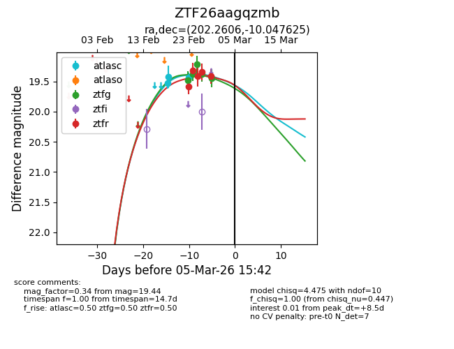
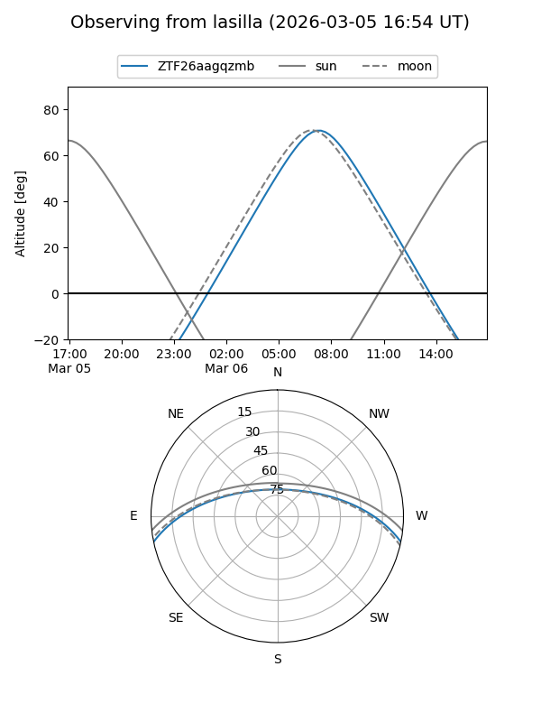
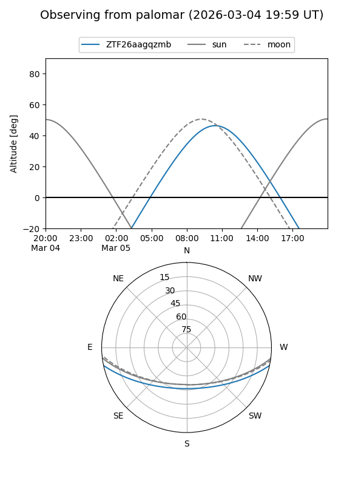
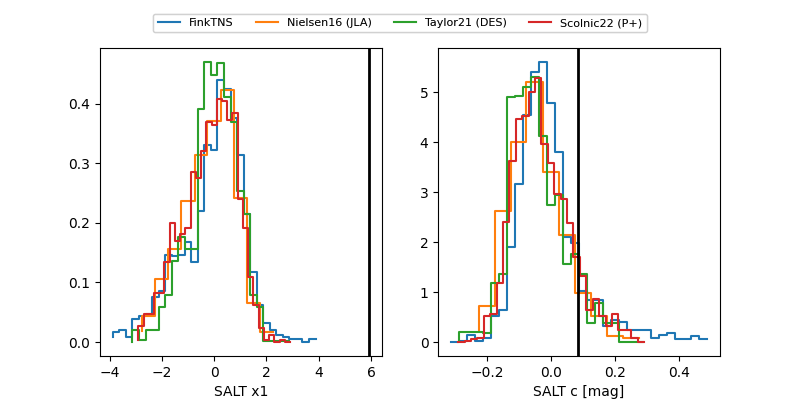

ZTF26aagqzmb
Target ZTF26aagqzmb at 2026-03-05 15:45
Aliases and brokers:
FINK: link
Lasair: link
ALeRCE: link
alt names
ZTF26aagqzmb (ztf,fink_ztf)
Coordinates:
equatorial (ra, dec) = 202.2606,-10.04763
equatorial (HMS+DMS) = 13:29:02.55,-10:02:51.45
galactic (l, b) = (317.9806,+51.72199)
Flags:
Photometry:
last atlasc=19.43, ztfg=19.44, ztfr=19.42
3 atlasc, 5 ztfg, 5 ztfr detections
Lightcurve

Visibility


Additional plots
